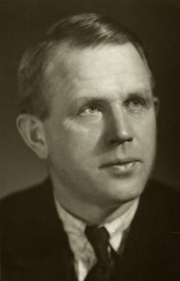
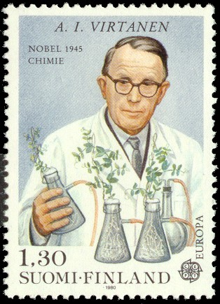

A.I. Virtanen


Artturi Ilmari Virtanen (A.I. Virtanen) was a famous finnish chemist. He was most known for
his
inventions
in
the field of agricultural chemistry, particularly for his fodder preservation method.
- 1895: Artturi Ilmari Virtanen is born in Helsinki, Finland.
- 1913: Virtanen begins studying at the University of Helsinki.
- 1925-1928: Virtanen invents improved methods for butter (AIV Salt) and fodder (AIV Fodder) preservation.
- 1945: Virtanen receives the Nobel Prize in chemistry.
- 1973: A.I. Virtanen dies of pneumonia.